YoyogiPinball
推し活や日々の生活の中で感じた手間をWebアプリやChrome拡張機能で減らしています。
カレンダーやYouTube、Slackなど、普段使うサービスを繋ぎ合わせてシステムにするのが得意です。
開発にはClaude CodeやCodexなどの生成AIを活用しています。
- Python
- JavaScript / TypeScript
- Google Apps Script
- Next.js
- Chrome Extension API
- Gemini API
- Slack API
- Git / GitHub
- Vercel
- Claude Code
- Codex
制作物
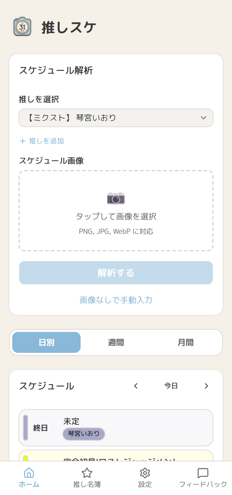
推しスケ Web版
推しが公開したスケジュール画像から配信予定を読み取るWebアプリです。
複数人の予定をまとめて表示します。
Googleでログインすると、普段使うカレンダーからも購読できます。
Next.js / Gemini API / Upstash Redis
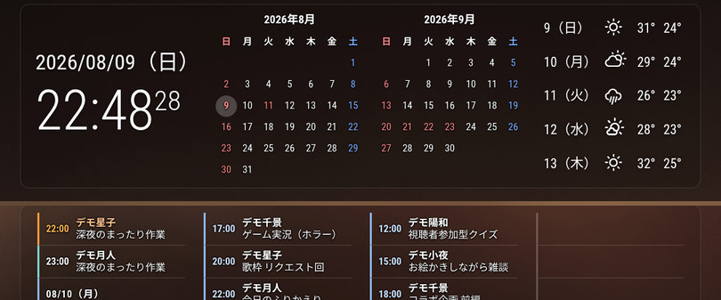
yp-signage
使っていないPCとモニターを再利用した常設サイネージです。
時計、予定、天気、写真、推しの配信予定を表示します。
MagicMirror² / JavaScript / iCal
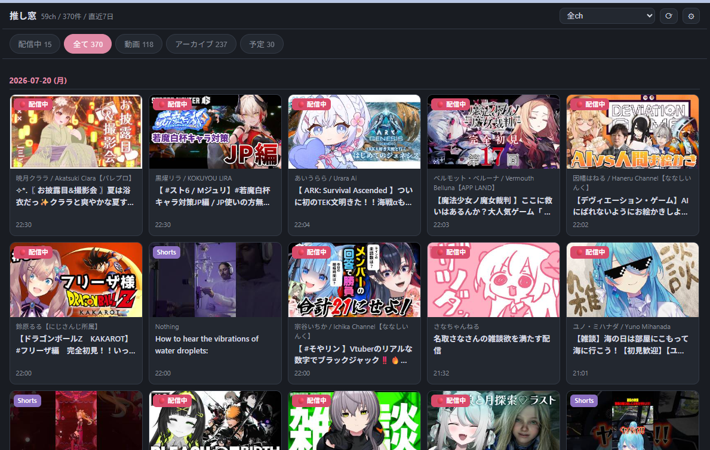
推し窓
登録チャンネルの中から推しの動画、ライブ、配信予定だけをまとめて表示するChrome拡張です。
Chrome Extension / YouTube Data API
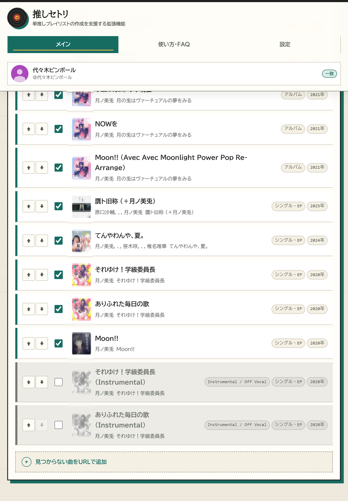
推しセトリ
YouTube Musicから一人のアーティストの曲を集め、プレイリストを作るChrome拡張です。
既存のプレイリストには未登録の曲だけを追加できます。
Chrome Extension / JavaScript
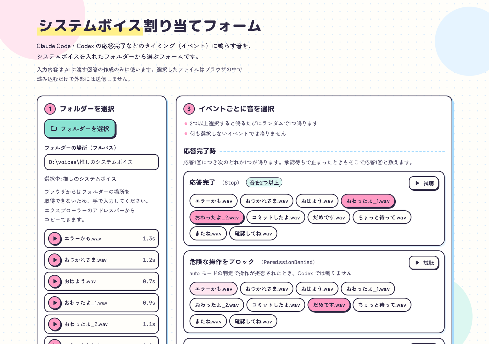
oshi-hookvoice
Claude CodeやCodexの通知音を推しのシステムボイスにするスキルです。
鳴らす音を割り当てフォームで選択すると、設定はAIが行います。
Agent Skill / Claude Code / Codex
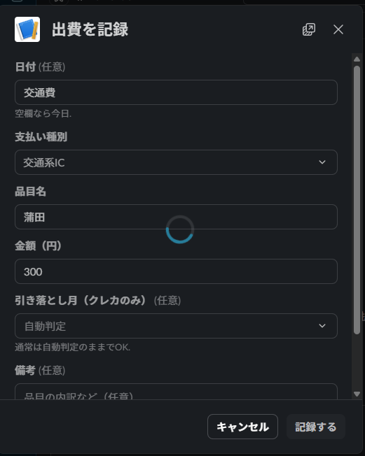
Slack 家計簿
普段使うSlackから収支を記録し、請求月の計算や月次集計まで自動化した個人用家計簿です。
Google Apps Script / Slack API
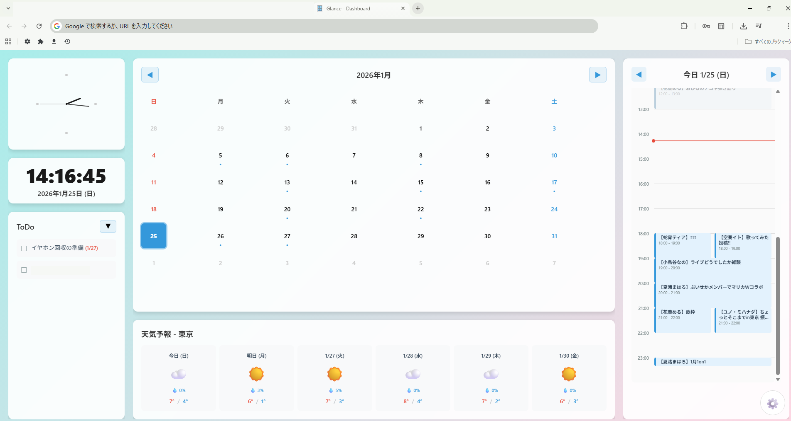
Glance
Chromeの新規タブに予定、天気、ToDoを表示します。
調べたい情報へ移動せず、その日の見通しを確認できます。
Chrome Extension / JavaScript
小さな制作物
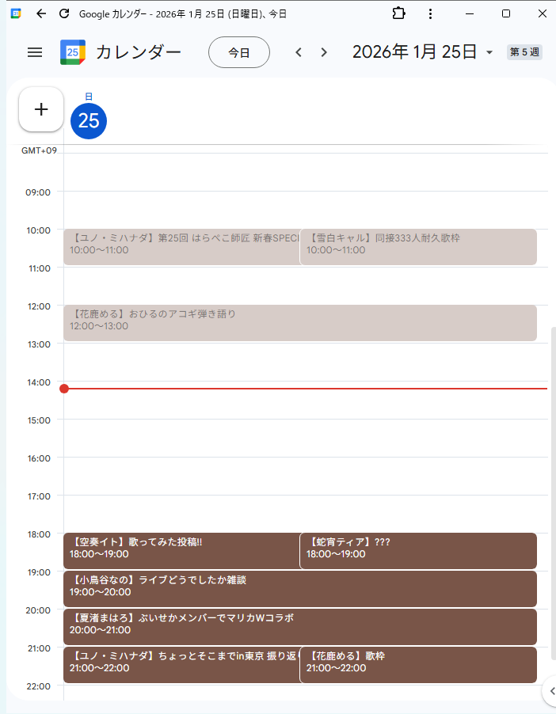
推しスケ GAS版 ↗
Discord通知とカレンダー連携で配信予定の確認を一か所にまとめたWeb版の前身です。
（こちらはWeb版とは異なりiCal未使用です。）
Python / Google Apps Script
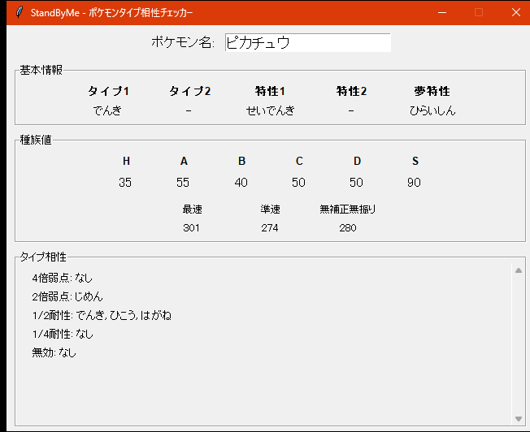
PokeAnalyzer-gen6 ↗
対戦中にポケモンの名前を入力するだけでタイプ相性や素早さをすぐ確認できるデータビューア。
ポケットモンスター第6世代（3DS）対戦環境用に開発したJavaFX版をPythonで再実装したものです。
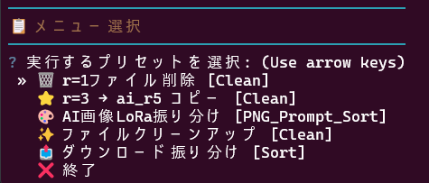
Loot Organizer ↗
繰り返し行うファイル整理をYAMLのルールに沿って自動化。
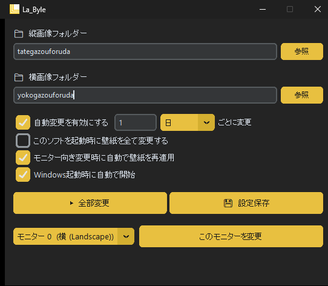
La_Byle ↗
縦・横のモニターごとに壁紙を切り替えるスライドショーアプリ。